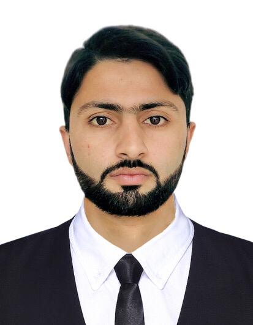

RESUME

OBJECTIVES:-
To focus my concentration for the growth of organization and to perform creative work together with cordial atmosphere and looking forward for further opportunities to learn and acquire skills. As paramedics my dream is to enhance the quality of health care to the fellow human being anywhere around the world to me it would be a proof of human attitude and a remarkable sense of responsibility towards humanity. Because, our target and mission is to extend and enhance the human life.
PERSONAL INFORMATION:-
| Father Name : |
Shams ul Qamar |
| Martial Status : |
Single |
| Gender : |
Male |
| Birth Date : |
19Apr2003 |
| Nationality : |
Pakistani |
| Religion : |
Islam |
EDUCATIONAL QUALIFICATION:-
| Degree |
Passing Year |
Total Marks |
Obtained Marks |
Institution |
Board |
| Matric |
2018 |
1100 |
915 |
Pakhtun Khwa Model School |
BISE Peshawar |
| FSC |
2021 |
1100 |
854 |
Khyber Model College |
BISE Peshawar |
| BS Computer Sci |
UnderGraduation |
UnderGraduation |
UnderGraduation |
UET Peshawar |
HEC |
LANGUAGE KNOWS:-
SKILLS:-
Programming Languages
- C++
- JAVA
- PYTHON
- HTML
- CSS
- MS Office
WORK EXPERIENCE:-
- Worked in Peshawar Deans Trade Center as a Agent buying Airline tickets, March 2021 till July 2021.
- Worked in Peshawar Dean Trade Center as a Graphic Designer, Passport pictures, Logos & Charts.
- Worked in Peshawar Mall Road Saddar as a Software Replacement in Mobiles phones.